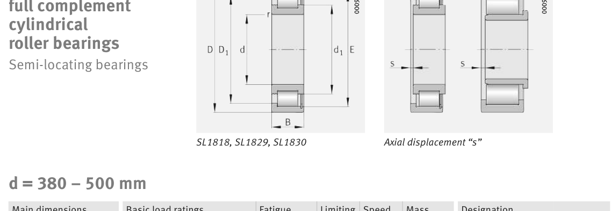

Original catalogue drawing - FAG Schaeffler HR 1, page 522

Scanned from the manufacturer catalogue page listing this part number. All part numbers printed on that table share the same drawing.
Scale cross-section
Blue = inner / outer ring, yellow = rolling element. Drawn to scale from this part's own
dimensions for selection reference only - not a manufacturing or assembly drawing.
Dimension table (mm / inch)
Symbol
Dimension
mm
inch
d
Bore diameter
380
14.9606
D
Outside diameter
480
18.8976
B
Inner-ring / bearing width
46
1.811
r
Chamfer (min)
2.1
0.0827
E
Roller-set outside dia.
459
18.0709
Notes
Weights are given in kg. Load ratings are shown in both the original catalogue units and the converted value (1 N = 0.2248 lbf). Data is provided for selection reference only - confirm against the latest official catalogue before ordering.
Main dimensions
Bore d (mm)
380
Outside dia. D (mm)
480
Width B (mm)
46
Inner-ring OD d1 (mm)
415.5
Inner-ring shoulder dia. D1 (mm)
448
Dimension E (mm)
459
Dimension s (mm)
4
Load ratings & speeds
Basic dynamic load rating Cr (lbs)
146126
Basic static load rating Cor (lbs)
290004
Basic dynamic load rating Cr (N)
650000
Basic static load rating C0r (N)
1.29e+06
Fatigue limit load Cur (N)
131000
Limiting speed nG (rpm)
710
Reference speed nB (rpm)
490
Weight
Weight (kg)
18.87
Mounting dimensions (fillets / shoulders)
Housing fillet r max (mm)
2.1
Shaft shoulder dc (mm)
415.5
Housing shoulder Da (mm)
448
Housing fillet ra max (mm)
2.1
Bearing life (ISO 281 basic rating life)
C / P
Equivalent load P (N)
L10 (106 rev)
L10h at 200 rpm
4
162,500
102
8,466
6
108,333
392
32,708
8
81,250
1,024
85,333
10
65,000
2,154
179,536
15
43,333
8,323
693,622
Basic rating life per ISO 281: L10 = (C/P)10/3 with C = 650,000 N. Hours = L10 x 106 / (60n). Life-modification factors for lubrication, contamination and temperature (aISO) are not included.
Source & traceability
Brand
FAG
Source catalogue
FAG / Schaeffler Rolling Bearings HR 1
Catalogue page
p.522 (dimensions)
Load ratings in newtons, fatigue limit load Cur, limiting speed nG and reference speed nB.
Send us the quantity you need and we will come back with price and
lead time, normally within 24 hours. Equivalent parts from other brands can be quoted at the same time.